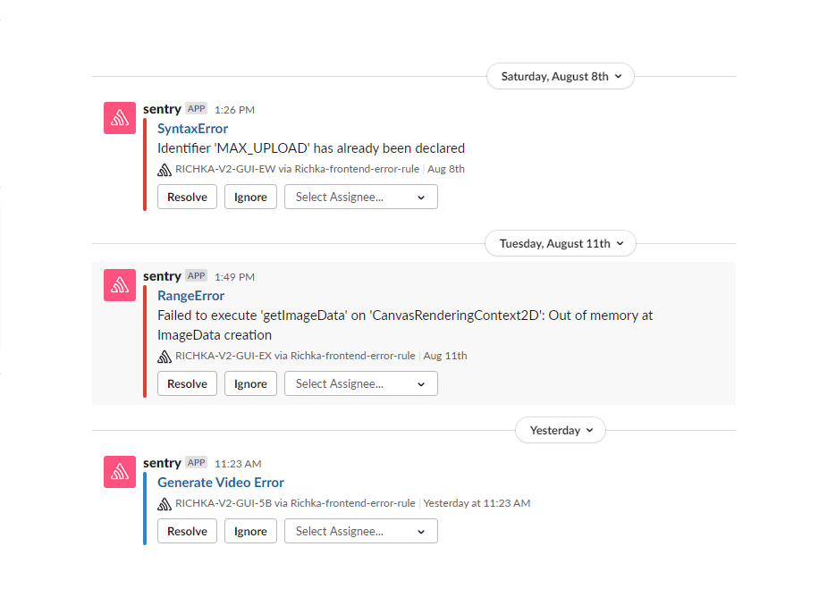

Using Sentry to debug JavaScript in the RICHKA front end
Abstract
Sentry is a service that helps you to monitor and fix crashes in realtime. Sentry has many official Sentry SDKs such as: JavaScript, React-Native, Python, Ruby, PHP, Go, Rust, Java, Objective-C/Swift, C#, Perl, Elixir, Laravel. In this post, we describe our usage of Sentry for JavaScript to debug RICHKA front end. After using Sentry for a while, we see a lot of bugs in production environment. Information is quite detailed so it's easy to address. I rate it very useful to debug in front end.
General usage of Sentry JavaScript
- First of all, we need to create Sentry account and create Project to debug. We can see debug logs in Sentry account 15-60 seconds after events occurred. Because Sentry account can join many organizations and many Projects so Sentry debug logs can be shared to all of developers.
- In separated logs, we can assign to specific developers and comment, set statuses.
- Because RICHKA Project developed by Django and Python, we configure Sentry JavaScript as base template. In Sentry account management, we can see a configuration or we can see a common JavaScript configuration in here
- Sentry integrates many third software : Slack, Git, GitLab, JIRA, Microsoft team, … RICHKA developers discuss in Slack so we integrated Sentry to Slack.
Here are some examples.


Integration between Sentry debug and Slack
- Create a new channel in Slack.
- Access Sentry project and Settings > Integrations > Slack and login Slack account.
- Assign a channel to report debug logs.

If a debug event occurs, Sentry server will send a post to the channel. Developers can easily track them. Note: if there're a lot of events, we need to configure number of posts in a channel.
Customize data in debug log
Because the size of the data sent to Sentry server is limited and length of additional data in Sentry log is too. So we need to create a function to split data.
function sentry_capture_message(data, extra, message) {
Sentry.withScope(scope => {
if (Array.isArray(data))
{
let i = 0;
for (let datum of data){
if (typeof datum == 'string') {
if (datum.length >= 16000 && datum.length <= 1024 * 1024) {
let stringArray = datum.split('\n');
for (let j = 0; j < stringArray.length; j++) {
if (stringArray[j].trim().length > 0) {
i++;
scope.setExtra(extra + sprintf("%04d",i), stringArray[j]);
}
}
}
}
else {
scope.setExtra(extra + sprintf("%04d",i), datum);
i++;
}
}
}
else scope.setExtra(extra, data);
Sentry.captureMessage(message);
});
}
For example about a target function to debug:
function deleteSearchKeyword(data_id){
if($('#stock-video > .stock_list > li.video').length > 0){
$('#stock-video > .stock_list > li.video').each(function(i, elem){
let src = $(elem).find('p span video').attr('src');
if(!src || src.endsWith('/static/')){
$(elem).remove();
}
});
$('div#stock-video > div.stock_title').hide();
$('.stock_more').hide();
}
if ($('#stock-photo > .stock_list').length > 0 || $('#stock-video > .stock_list').length > 0) {
var materials_id = [];
$.each($('.materialIndex'), function(i,v) {
materials_id.push($(v).val());
});
var el = $('.delete-keyword');
$.ajax({
'url': '/delete_material_when_redirect',
'type': 'POST',
'data': {
'video_data_id': data_id,
'materials_id': materials_id
},
'dataType': 'json',
'async': true,
'success': function (response) {
if (!response.result) {
console.warn('削除中にエラーが発生しました : deleteSearchKeyword');
sentry_capture_message([data_id, response], 'response', `Delete Material When Redirect Error`);
}
},
'error': function(err) {
sentry_capture_message([data_id, err.responseText], 'response', `Delete Material When Redirect Error`);
}
});
}
}
Here are some of the results after customization. The logs with prefix response0000, response0044 - response0054 are the ones split by our custom JavaScript function sentry_capture_message.